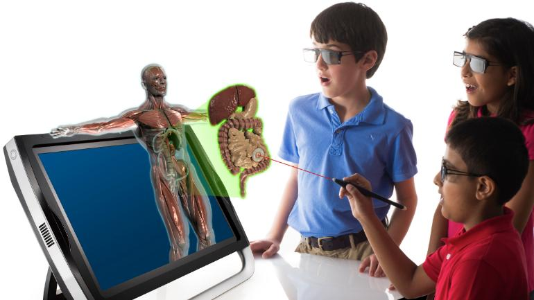
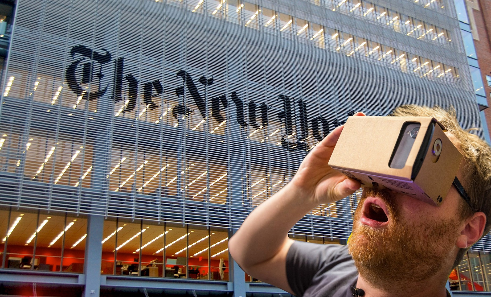

AR & VR in Education
Augmented and virtual reality have the potential to bring more students into the classroom and create more engaging and exciting classroom experiences. Using VR, students in health care facilities or rural areas can participate in the classroom virtually in a much more full and rich way than in traditional online classes. Using AR and VR, teachers can create an immersive learning environment, allowing students to explore the ocean floor or unfamiliar parts of the globe.

AR & VR in Tourism
The tourism industry is taking the first steps to enabling us to go on guided virtual tours of hotels, restaurants and tourist landmarks. Thomas Cook launched their 'Try Before You Fly' VR experience in 2015, where potential holidaymakers visit stores in various countries to experience the holiday in VR before booking it.
